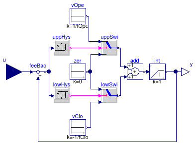

Package with motor models for valves and dampers
Information
This package contains components models for motors that may be
used with the actuator models in
Buildings.Fluid.Actuators.Dampers
or
Buildings.Fluid.Actuators.Valves.
Extends from Modelica.Icons.VariantsPackage (Icon for package containing variants).
Package Content
| Name |
Description |
 IdealMotor IdealMotor
|
Ideal motor model with hysteresis |
 Examples Examples
|
Collection of models that illustrate model use and test models |
Ideal motor model with hysteresis

Information
Ideal actuator motor model with hysteresis and finite actuation speed.
If the current actuator position y is below (or above) the
input signal u by an amount bigger than the hysteresis
delta, then the position y is increased (decreased)
until it reaches u.
The output y is bounded between 0 and 1.
Note: This model can introduce state events which increase the computation time.
For a more efficient implementation that approximates a motor, set in
the valve or damper model the parameter filteredOpening=true
instead of using this motor model.
See also
Buildings.Fluid.Actuators.UsersGuide.
Extends from Modelica.Blocks.Interfaces.SISO (Single Input Single Output continuous control block).
Parameters
| Type | Name | Default | Description |
|---|
| Real | delta | 0.05 | Hysteresis |
| Time | tOpe | 120 | Opening time [s] |
| Time | tClo | tOpe | Closing time [s] |
| Real | y_start | 0.5 | Start position |
Connectors
| Type | Name | Description |
|---|
| input RealInput | u | Connector of Real input signal |
| output RealOutput | y | Connector of Real output signal |
Modelica definition
model IdealMotor
"Ideal motor model with hysteresis"
extends Modelica.Blocks.Interfaces.SISO;
parameter Real delta(min=0, max=0.5) = 0.05
"Hysteresis";
parameter Modelica.SIunits.Time tOpe(min=0) = 120
"Opening time";
parameter Modelica.SIunits.Time tClo(min=0) = tOpe
"Closing time";
parameter Real y_start(min=0, max=1) = 0.5
"Start position";
Modelica.Blocks.Logical.Hysteresis uppHys(
final uLow=0, uHigh=delta,
final pre_y_start=false);
Modelica.Blocks.Logical.Hysteresis lowHys(uLow=-delta,
final uHigh=0,
final pre_y_start=true)
"Lower hysteresis";
Modelica.Blocks.Logical.Switch uppSwi;
Modelica.Blocks.Continuous.LimIntegrator int(
final y_start=y_start,
final k=1,
outMax=1,
outMin=0,
initType=Modelica.Blocks.Types.Init.InitialState,
limitsAtInit=true,
y(stateSelect=StateSelect.always))
"Integrator for valve opening position";
protected
final Modelica.Blocks.Sources.Constant zer(
final k=0)
"Zero signal";
Modelica.Blocks.Sources.Constant vOpe(
final k=1/tOpe)
"Opening speed";
Modelica.Blocks.Sources.Constant vClo(
final k=-1/tClo)
"Closing speed";
Modelica.Blocks.Logical.Switch lowSwi;
Modelica.Blocks.Math.Add add;
Modelica.Blocks.Math.Feedback feeBac
"Feedback to compute position error";
equation
connect(zer.y, uppSwi.u3);
connect(uppHys.y, uppSwi.u2);
connect(vOpe.y, uppSwi.u1);
connect(lowHys.y, lowSwi.u2);
connect(vClo.y, lowSwi.u3);
connect(zer.y, lowSwi.u1);
connect(add.y, int.u);
connect(uppSwi.y, add.u1);
connect(u, feeBac.u1);
connect(feeBac.y, uppHys.u);
connect(feeBac.y, lowHys.u);
connect(lowSwi.y, add.u2);
connect(int.y, y);
connect(int.y, feeBac.u2);
end IdealMotor;
Automatically generated Mon Jul 13 14:23:48 2015.
 Buildings.Fluid.Actuators.Motors.IdealMotor
Buildings.Fluid.Actuators.Motors.IdealMotor